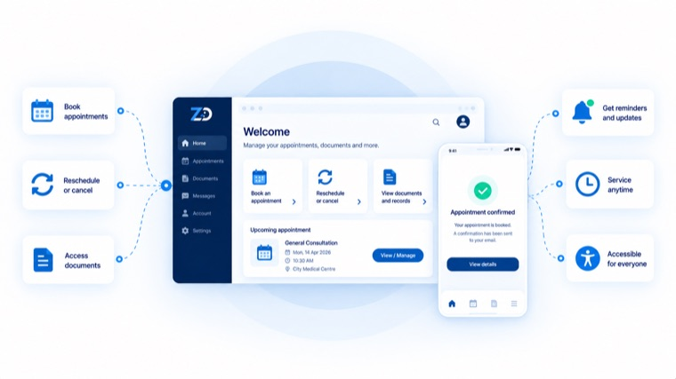
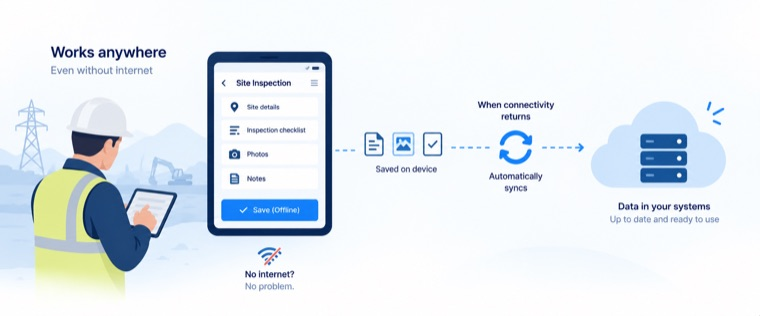

Customer portals and self-service booking
Self-service that genuinely reduces inbound calls, designed around the moments that decide whether someone completes the task or picks up the phone.
Booking and reschedulingAccessible by default
View Mobile App Development
Consumer and enterprise mobile applications for iOS and Android — native where device capability and performance decide the outcome, cross-platform where speed to market and a shared roadmap matter more.
Overview
We take mobile products from definition through store launch and stay on for the OS upgrades, store policy changes and crash triage that follow. Whichever stack an engagement uses, the release standard is the same.
Typical engagement
Starts with: a short, fixed-scope discovery
First release: in production early, not at the end
Team: named in the proposal
Exit: documented and rehearsed from day one
Capabilities
Swift and Kotlin engineering for products where camera, offline, background processing or deep platform integration carry the experience.
React Native and Flutter builds with a shared design system, so two platforms stay in step without doubling the roadmap.
Rescue and re-architecture of ageing codebases: dependency debt, store compliance, crash rates and release cadence.
The services, sync engine and event pipeline behind the app, designed for intermittent connectivity and constrained devices.
Automated build, signing, phased rollout and rollback across App Store Connect and Google Play.
Funnels, remote configuration and A/B infrastructure wired in from the first build rather than retrofitted.
How we deliver
Step 01
Discovery covering user research, journey mapping, technical constraints and a release plan tied to business milestones.
Step 02
Navigation model, state management, offline strategy and a component library documented before feature work begins.
Step 03
Working builds distributed to your team every sprint through TestFlight and internal tracks — never a six-month blind spot.
Step 04
Staged rollout, store listing optimisation, crash triage and a support model that continues past go-live.
Technology
We keep a deliberately narrow toolset so the depth is real. Within it, the choice is made per engagement based on your team and your constraints rather than our preferences.
Where your team already knows a technology well, that usually outweighs a marginal technical advantage elsewhere — and we will say so.
| Area | Tools and platforms |
|---|---|
| Native | Swift, SwiftUI, Kotlin, Jetpack Compose |
| Cross-platform | React Native, Flutter, Expo |
| Backend | Node.js, Go, GraphQL, Firebase, Supabase |
| Quality | XCTest, Espresso, Detox, Maestro, Crashlytics |
Where this applies

Self-service that genuinely reduces inbound calls, designed around the moments that decide whether someone completes the task or picks up the phone.

Applications for people working where connectivity cannot be assumed — designed so that being offline is the normal case, not a degraded one.
Questions
The questions clients actually ask about this practice, including the awkward ones.
All FAQsOn evidence rather than preference. If the product leans on device capability, sustained graphics or deep OS integration, native wins. If the roadmap is feature-led and the team is small, React Native or Flutter delivers the same experience for meaningfully less. We put the recommendation in writing with the trade-offs stated plainly.
Yes. We start with a technical audit covering architecture, dependency risk, store compliance and test coverage, then give you a prioritised remediation plan with effort estimates before committing to a schedule.
You do. We work inside your Apple Developer and Google Play accounts, or set them up in your company's name at the start.
Most clients move to a managed support arrangement covering OS upgrades, store policy changes, crash triage and a monthly enhancement allocation. It is optional and cancellable on notice.
Related practices
Most work combines two or three practices under a single delivery lead.
Start a conversation
An hour with our team, no charge and no obligation. You will leave with a point of view on the problem whether or not you work with us.